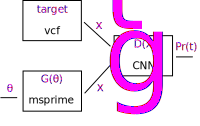

Creating a Dinf model
Contents
1. Creating a Dinf model#
This page discusses how to construct a minimal simulation-only Dinf model.
It provides code examples for each component, and the complete
working model can be found at the bottom of the page,
or in the git repository
under examples/bottleneck/model.py.
Writing a Dinf model requires a familiarity with Python,
and the examples use
demes,
msprime,
and numpy
APIs.
1.1. Overview#
The primary use of Dinf is to infer simulation parameters that produce data closely resembling some target empirical dataset. In the diagram below, the rectangles represent the major components of a Dinf model, and the arrows indicate the flow of data.

\(\theta\) are the model parameters, such as population sizes, split times, or migration rates.
\(G(\theta)\) is the generator (e.g. msprime), that simulates genetic data for concrete values of the model parameters.
\(target\) is the target dataset (e.g. a vcf).
\(x_t\) and \(x_g\) indicate data features from the target and the generator respectively.
\(D(x)\) is the discriminator (e.g. a convolutional neural network), which is trained to distinguish between data generated by the generator and the target dataset.
\(Pr(t)\) is the prediction from the discriminator—the probability that a given input feature is from the target distribution.
A Dinf model is organised as a Python script (a .py file)
containing a dinf_model variable,
which must be an instance of the DinfModel class.
This object describes various components of the model.
import dinf
dinf_model = dinf.DinfModel(
parameters=parameters,
generator_func=generator,
target_func=None,
)
Defining the model then procedes by describing the parameters,
writing the generator_func function,
and writing the target_func function (if any).
It’s not necessary to specify the architecture of the discriminator.
1.2. Parameters#
In this example, we’ll have two inferrable parameters,
N0 and N1, which correspond to the population sizes of a
deme before and after a bottleneck.
DinfModel.parameters are defined via the Parameters class,
whose constructor accepts named Param instances by keyword.
Each keyword is the name of a parameter (N0 and N1 in the code below)
and each parameter has a lower bound (low) and an upper bound (high).
Parameters defined in this way have a uniform prior, e.g.
N0\(\sim\)Uniform(10, 30000).
When performing a simulation study (as we’ll do here), the truth value
will be used to produce the target dataset instead of using empirical data.
parameters = dinf.Parameters(
N0=dinf.Param(low=10, high=30_000, truth=10_000),
N1=dinf.Param(low=10, high=30_000, truth=200),
)
1.3. Generator#
The generator is probably the most complicated part of the Dinf model. A genetic simulator must take the parameters and turn them into genetic data. The genetic data must then be transformed to match the expected input of the discriminator. The inputs to the discriminator are referred to as the features of the data, and the transformation of the genetic data into the desired format is referred to as feature extraction.
1.3.1. Features#
Dinf features are typically genotype matrices,
or a collection of matrices (e.g. when modelling multiple populations).
It’s important that there is agreement between the features extracted from the
generator and the features extracted from the target dataset.
Ideally, the only differences will be due to the accuracy of the simulation
model and the parameter values, not due to data filtering or quality issues.
To ensure consistency, the Dinf API provides helper classes for
feature extraction that have methods for extracting features from
vcf files and from tskit.TreeSequence objects.
The Feature matrices page describes the different feature extraction
classes provided by the Dinf API,
and shows heatmap plots for matrices from each class.
In the example model here, we’ll use the BinnedHaplotypeMatrix
feature extractor class.
num_individuals = 16
features = dinf.BinnedHaplotypeMatrix(
num_individuals=num_individuals,
num_loci=64,
ploidy=2,
phased=False,
maf_thresh=0.05,
)
1.3.2. Genetic simulator#
DinfModel.generator_func is a user-defined function that produces data
features using a genetic simulator.
The function accepts a single positional argument seed,
followed by one keyword argument for each inferrable parameter.
So for our example there’s one argument for N0 and one for N1.
Note that the python syntax def generator(seed, *, N0, N1): means
that all parameters after the * are keyword-only parameters.
The generator function must return the features that were extracted
from the simulated data.
There are a lot of choices to be made when simulating genetic data.
In the example below, the bottleneck demographic model is described using
a templated Demes YAML
string.
This demographic model is simulated using the
msprime
coalescent simulator, whose output is a tskit.TreeSequence.
Finally, the features are extracted from the output using the
BinnedHaplotypeMatrix.from_ts() method of the features object
we defined above.
import string
import demes
import msprime
import numpy as np
recombination_rate = 1.25e-8
mutation_rate = 1.25e-8
sequence_length = 1_000_000
def demography(*, N0, N1):
model = string.Template(
"""
description: Two-epoch model with recent bottleneck.
time_units: generations
demes:
- name: A
epochs:
- start_size: $N0
end_time: 100
- start_size: $N1
end_time: 0
"""
).substitute(N0=N0, N1=N1)
return demes.loads(model)
def generator(seed, *, N0, N1):
"""Simulate a two-epoch model with msprime."""
rng = np.random.default_rng(seed)
graph = demography(N0=N0, N1=N1)
demog = msprime.Demography.from_demes(graph)
seed1, seed2 = rng.integers(low=1, high=2**31, size=2)
ts = msprime.sim_ancestry(
samples=num_individuals,
demography=demog,
sequence_length=sequence_length,
recombination_rate=recombination_rate,
random_seed=seed1,
record_provenance=False,
)
ts = msprime.sim_mutations(ts, rate=mutation_rate, random_seed=seed2)
feature_matrix = features.from_ts(ts)
return feature_matrix
Note that Dinf has no explicit requirement to use demes
for the demographic model, nor to use msprime as the simulator.
It would even be possible to write a generator function with a
simulator that doesn’t output a tskit.TreeSequence.
Dinf provides discriminator networks
that work well with the provided
feature extraction classes,
so substituting custom features will likely require additional effort
and testing.
1.4. Target#
When defining the DinfModel object above,
we set target_func=None. This means that Dinf will reuse the
generator function to create the target dataset. When simulating the
target dataset, the truth values specified for the parameters
will be passed to the generator function.
1.5. Discriminator#
We have not specified anything about the discriminator.
By default Dinf will use ExchangeableCNN,
a small exchangeable convolutional neural network,
that treats haplotypes within populations as exchangeable.
1.6. Complete example#
Putting this all together into one file we obtain:
import string
import demes
import msprime
import numpy as np
import dinf
recombination_rate = 1.25e-8
mutation_rate = 1.25e-8
num_individuals = 16
sequence_length = 1_000_000
parameters = dinf.Parameters(
N0=dinf.Param(low=10, high=30_000, truth=10_000),
N1=dinf.Param(low=10, high=30_000, truth=200),
)
def demography(*, N0, N1):
model = string.Template(
"""
description: Two-epoch model with recent bottleneck.
time_units: generations
demes:
- name: A
epochs:
- start_size: $N0
end_time: 100
- start_size: $N1
end_time: 0
"""
).substitute(N0=N0, N1=N1)
return demes.loads(model)
features = dinf.BinnedHaplotypeMatrix(
num_individuals=num_individuals,
num_loci=64,
ploidy=2,
phased=False,
maf_thresh=0.05,
)
def generator(seed, *, N0, N1):
"""Simulate a two-epoch model with msprime."""
rng = np.random.default_rng(seed)
graph = demography(N0=N0, N1=N1)
demog = msprime.Demography.from_demes(graph)
seed1, seed2 = rng.integers(low=1, high=2**31, size=2)
ts = msprime.sim_ancestry(
samples=num_individuals,
demography=demog,
sequence_length=sequence_length,
recombination_rate=recombination_rate,
random_seed=seed1,
record_provenance=False,
)
ts = msprime.sim_mutations(ts, rate=mutation_rate, random_seed=seed2)
feature_matrix = features.from_ts(ts)
return feature_matrix
dinf_model = dinf.DinfModel(
target_func=None,
generator_func=generator,
parameters=parameters,
)